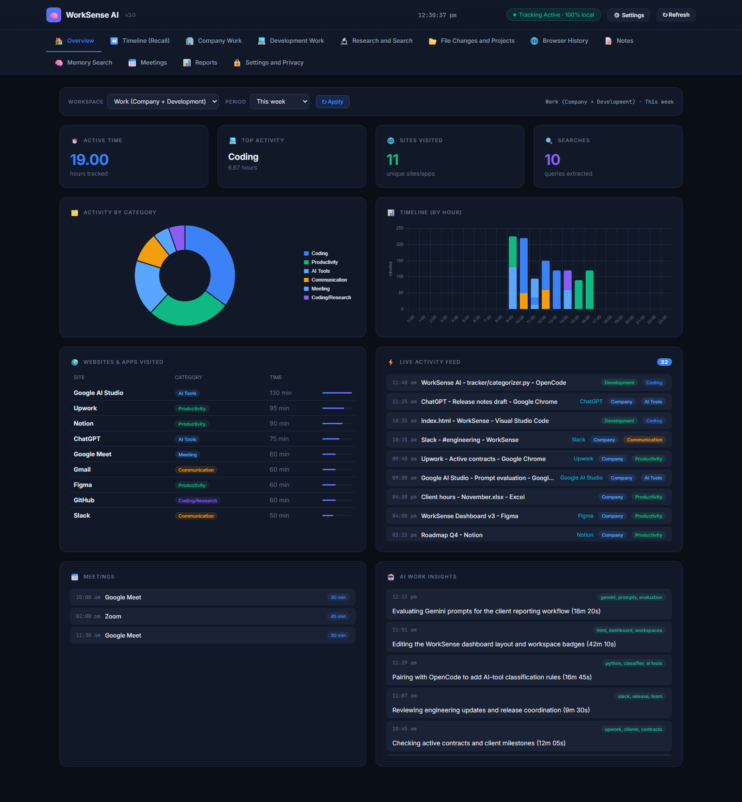
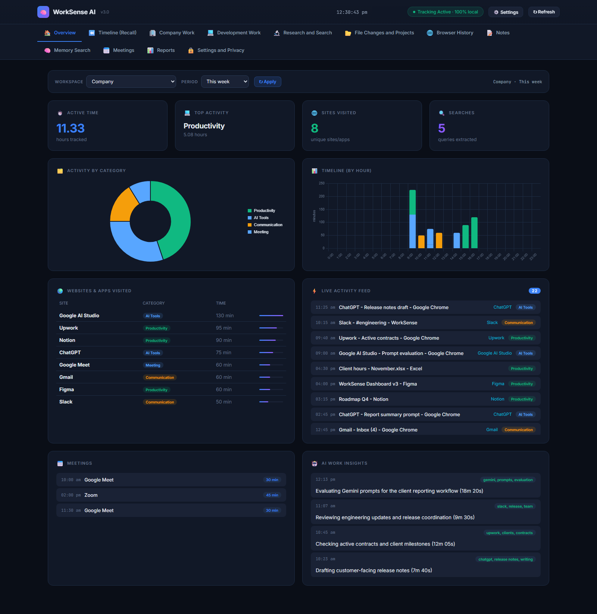
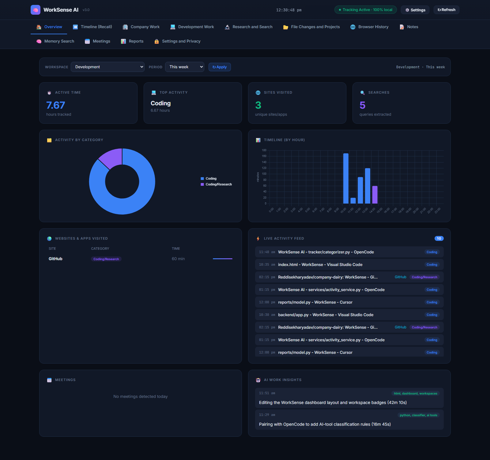
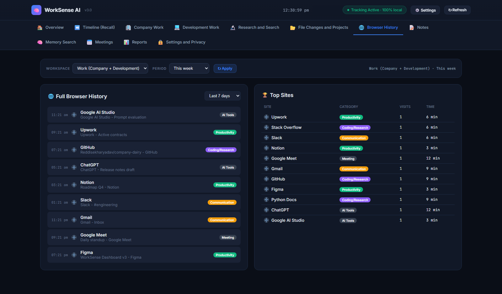
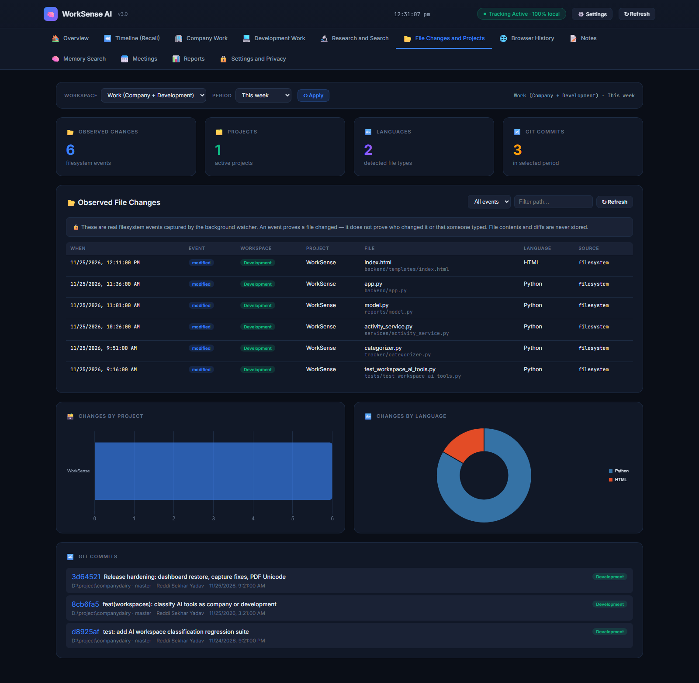
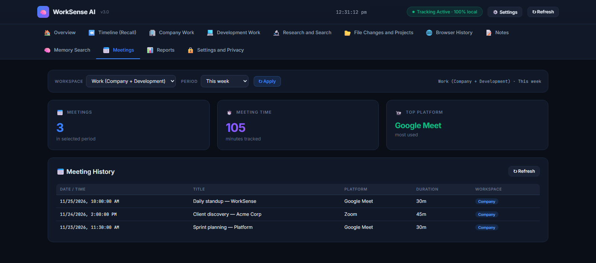

WorkSense runs quietly in the background, separates company work from development and personal time, and turns your day into reports you can actually use. Everything stays on your machine.

Most trackers lump every app into one productivity number. WorkSense keeps company work, development, personal time and unclassified activity separate — so your reports say what they mean.
Client delivery, communication, research and browser AI assistants used for work.
Coding IDEs, AI coding agents, repositories, files and technical research.
Streaming, social and personal browsing that should never appear in a work report.
New or ambiguous apps wait here until you or the rules assign a workspace.
Choose Work (Company + Development) to see both scopes together. Personal and unclassified records stay out.
Active windows, browser history, code edits, files, meetings and AI tools — captured locally and organized into reports you can hand to a client or manager.
OpenCode, Cursor, VS Code and Antigravity count as development. Google AI Studio, ChatGPT, Gemini, Claude, Copilot and Perplexity count as company work.
Company, Development, Personal and Unclassified stay separate in every API, report and export. Pick Combined only when you want both work scopes.
Detects the application, window title and focused time — then categorizes it as coding, browsing, communication, meetings and more.
Reads Chrome, Edge and Firefox history with site names, domains, visit counts and top sites. AI assistants and job platforms are classified automatically.
A filesystem watcher records real file changes; a focused-window estimator tracks edit time, project, language and git commits — without storing file contents.
Generate Markdown, PDF, DOCX and a multi-sheet Excel workbook from the same structured model. Email reports only when you configure SMTP and press send.
Summaries, topic keywords, research queries and semantic memory search help you remember what you were doing — with an optional API key, not a required account.
Recognizes Teams, Zoom, Google Meet and Webex windows, then logs meeting time, platform and title alongside your work.
Screen capture is off until you consent, stored locally, and revocable at any time. No telemetry, no hidden upload, no keystroke logging.
The release that stopped treating AI tools as “other” and gave every event a workspace.
Screenshots from a live WorkSense session. Switch views to see how company work, development, browser history, file changes and meetings are separated.





Demo data. No client names, personal browsing or screen captures are included.
One executable. No installer wizard, no Python, no account, no server to host.
Grab the Windows .zip from the release. Verify the SHA-256 shown on this page if you want.
Extract and double-click WorkSense.exe. Tracking starts with a small tray icon and optional floating widget.
The local dashboard opens at localhost:8765. Choose a workspace and period, then watch the live feed.
Generate Markdown, PDF, DOCX or Excel for the day, week or month. Email it only when you explicitly send.
WorkSense is local-first by architecture, not by promise. The database is a SQLite file in %APPDATA%\WorkSense, and every dashboard request is served from your own loopback address.
Activity, browser history, files, meetings and notes are stored in a local SQLite database. Nothing is uploaded in the background.
Screen capture and OCR are off until you grant consent. You can revoke access from Settings and Privacy at any time.
The dashboard binds to 127.0.0.1. Foreign Host and Origin headers are rejected, and the API docs are not exposed.
Email reports and optional AI requests happen only when you configure credentials and trigger them. There is no hidden sync.
A local-first tracker for people who need honest work reports — not surveillance dashboards.
| Capability | WorkSense AI | Typical cloud tracker |
|---|---|---|
| Where data lives | Your local SQLite file | Vendor cloud |
| Account required | No | Yes |
| AI coding tools classified | Yes — Development | Usually “Other” |
| Browser AI assistants classified | Yes — Company | Usually “Browsing” |
| Company / Development separation | Built in | Rare |
| Screen capture | Optional, consent-based, local | Often always-on |
| Reports | MD, PDF, DOCX, Excel | PDF or web only |
| Source code | Open source (MIT) | Closed |
One standalone executable. No Python, no dependencies, no server. Built for Windows 10/11 64-bit; macOS and Linux build from source.
64-bit · standalone executable
Download the rolling .zip built from the latest master commit. The build includes the AI workspace rules and the new combined work view.
Compare the SHA-256 above with PowerShell:
Get-FileHash .\WorkSense-Windows.zip -Algorithm SHA256
The hash is read live from the GitHub release asset. The executable itself is unsigned; signing is planned.
.zip
2. Double-click WorkSense.exe
3. More info → Run anyway
4. Optional: add an antivirus exclusion
The short answers. The full technical details are in the release checklist and production readiness audit on GitHub.
No. Activity, browser history, file metadata, meetings and notes are stored in a local SQLite database under %APPDATA%\WorkSense. The dashboard is served from 127.0.0.1. Email reports and optional AI requests happen only when you configure credentials and explicitly trigger them.
Yes, most likely. The executable is currently unsigned, so SmartScreen may show “Windows protected your PC”. Click More info → Run anyway. The SHA-256 of the download asset is shown on this page and comes directly from the GitHub release. Code signing is the next commercial milestone.
No keystrokes or clipboard content are recorded. Screen capture is off by default and only starts after you grant consent. Captures stay on your machine and can be disabled at any time from Settings and Privacy.
Coding IDEs and agents — VS Code, Cursor, OpenCode, Antigravity, Windsurf, Trae, Kiro and similar — are classified as Development. Browser AI assistants — Google AI Studio, ChatGPT, Gemini, Claude, Copilot, Perplexity, DeepSeek, Grok and similar — are classified as Company. Rules live in workspace_rules.json and are migrated additively, so your custom entries survive updates.
The release pipeline produces macOS and Linux builds from the same source, but Windows 10/11 is the supported path for the current pilot. If you need macOS or Linux, build from source or open an issue so we can validate your environment.
The default retention policy deletes rows older than 30 days at startup. You can raise retention_days in settings, and you should back up events.db before upgrading a machine that has older history.
No. WorkSense is intentionally local-first: each machine owns its database. Teams share results by exporting reports or the Excel workbook. There is no central server collecting employee activity.
Exit from the tray icon, delete WorkSense.exe, and optionally delete %APPDATA%\WorkSense to remove the local database, rules and settings. No services or drivers are installed.
Full-stack developer building local-first productivity and AI tools. WorkSense started as a way to answer “what did I actually do today?” without sending a single byte to a cloud dashboard. It is open source under the MIT license.
Download WorkSense, pick a workspace, and see your real workday in the local dashboard.
⬇ Download for Windows